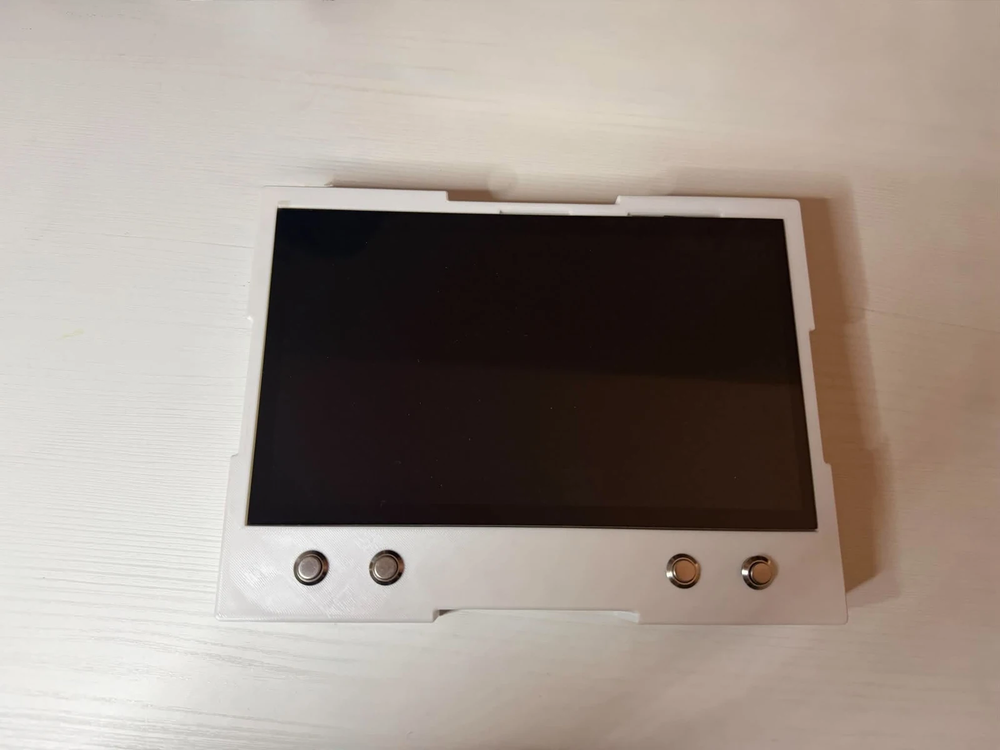
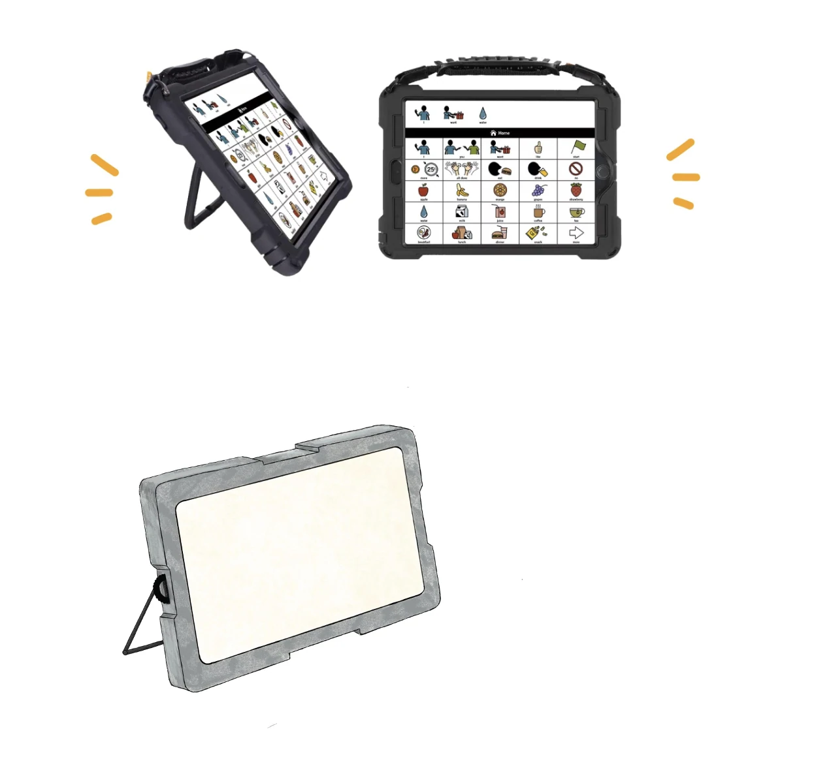
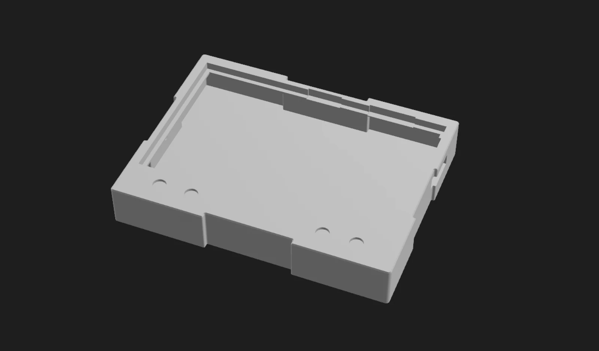
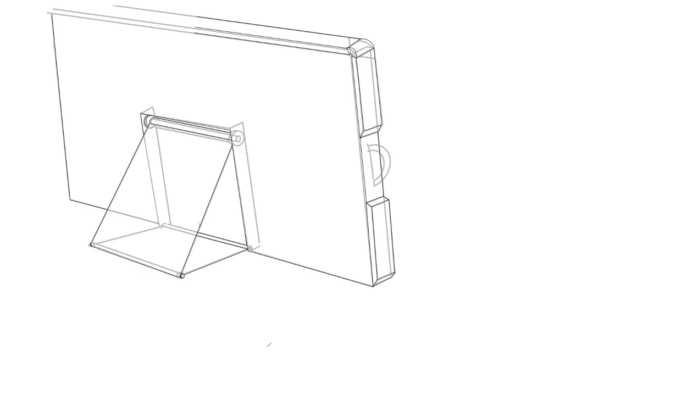
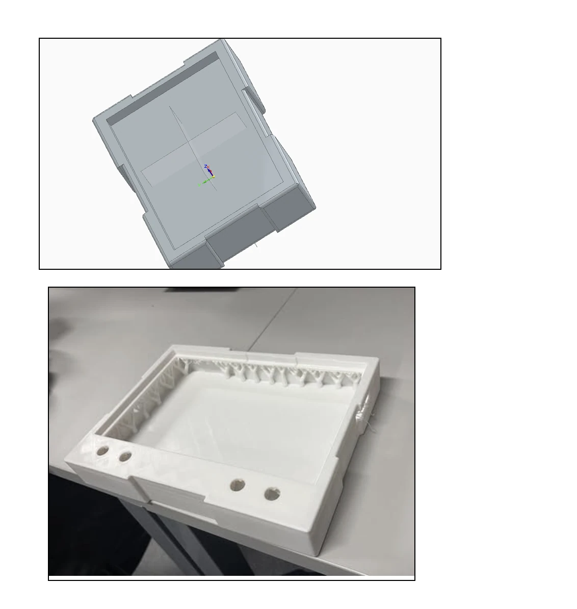
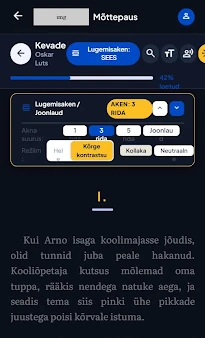
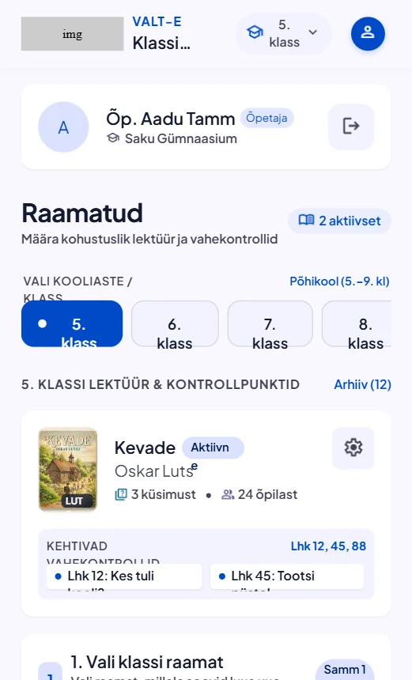
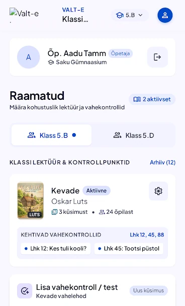

Rühm 3 · Õppedisain ja kasutajaliides
Funktsionaalse lugemisoskuse seade Valt-e
Valt-e prototüüp ühendab eraldi lugemisseadme korpuse ning õpilasele ja õpetajale mõeldud rakenduse kavandi.


Probleem ja eesmärk
Rühm uuris, millist tuge vajavad õpilased, kellel on raske tekstist olulist infot leida, seoseid märgata ja järeldusi teha. Töö keskendus eelkõige kolmanda kooliastme õpilastele ning neid toetavatele õpetajatele ja tugispetsialistidele.
Intervjuudes tulid esile näiteks rea jälgimine, sõnade märkimine, teksti jagamine lühemateks osadeks ning küsimused loetu mõtestamiseks. Rühm kavandas lahenduse, kus õpetaja saab materjali kohandada ja õpilane lugemise ajal vajalikku tuge kasutada.
Lahendus
Õpilase vaates ühendab kavand erineva raskusega tekstid, muudetava tekstisuuruse ja mõistmisülesanded. Teksti sisse saab kavandi järgi põimida mõttepause, kus õpilane vastab küsimusele ja saab tagasisidet. Õpetaja vaates saab lisada tekste, koostada ülesandeid ning jälgida õpilase edenemist.
Rakenduse kõrval kavandas rühm puuteekraani ja nuppudega eraldi seadme. Korpuse mudelisse tuli mahutada ekraan ning jätta ruumi sisemistele komponentidele. Ühes korpusevariandis joonistati välja ka tagumine tugi.
Disainiprotsessi kokkuvõte
Rühm kaardistas õpetajate ja tugispetsialistide intervjuudes, millistes lugemise etappides õpilased abi vajavad. Nende tähelepanekutest kujunesid rakenduse põhifunktsioonid: muudetav tekstisuurus, teksti sisse paigutatud mõttepausid ja õpetaja võimalus lisada sobivat materjali. Rakenduse kasutajavaateid ja seadme korpust arendati paralleelselt, sest mõlemat tuli eraldi proovida.
Klõpsatava prototüübi test näitas, et eripedagoogid pidasid teksti suuruse muutmist kasulikuks ning soovisid selgemaid juhiseid ja lihtsamat navigeerimist. Korpuse prooviprindiga kontrolliti teistsugust küsimust: kas ekraan ja nupud mahuvad kavandatud kohtadesse. Need katsed andsid sisendi seadme edasiarenduseks. Mõju õpilaste lugemisoskusele jäi uurimata.
Arendusprotsess
-
10.–24. september Uurimisküsimused ja intervjuud
Rühm täpsustas, mida funktsionaalne lugemine selle projekti jaoks tähendab. Õpetajatelt ja tugispetsialistidelt koguti näiteid võtetest, mis aitavad õpilasel teksti jälgida ja loetut mõtestada. 24. septembri kohtumisel koondati intervjuude tähelepanekud.
-
30. september – 23. oktoober Kasutajavaated ja korpuse visandid
Valmisid esimesed visandid. Rühm koostas disainibriifi, kirjeldas riistvara ja tarkvara nõudeid ning alustas rakenduse ja korpuse paralleelset arendamist. 23. oktoobril esitles rühm vahenädalal probleemi, kasutajauuringut ja esialgset prototüüpi.
-
5.–10. november Rakenduse katsetamine
Rühm jagas riistvara ja tarkvara ülesanded ning katsetas Figmas rakenduse õpilase ja õpetaja vaateid. 10. novembri eripedagoogi tagasisides hinnati teksti suuruse muutmist ja õpetaja võimalust lisada lugemismaterjali. Muutmist vajasid mõne vaate navigeerimine ja juhiste sõnastus.
-
12.–26. november Korpuse viimistlemine ja detailide sobitamine
Rühm kontrollis Solid Edge’is 3D-mudeli mõõtmeid, printis korpuse välja ning sobitas sellesse ekraani ja nupud. Päevikus märgiti, et need mahtusid prinditud korpusesse kavandatud viisil.
Pildid ja joonised














Tulemus
Rühm tegi Figmas klõpsatava rakenduseprototüübi ja füüsilise korpuse, millesse sobitati ekraan ning nupud. Testijad soovitasid rõhutada olulisi tekstiosi, lihtsustada juhiseid ja võimaldada õpetajal lisada rohkem mõistmisküsimusi.
Kasutustest andis tagasisidet seadme ja rakenduse kavandi kohta. Lugemistulemuste muutumist rühm nende katsetega ei mõõtnud.